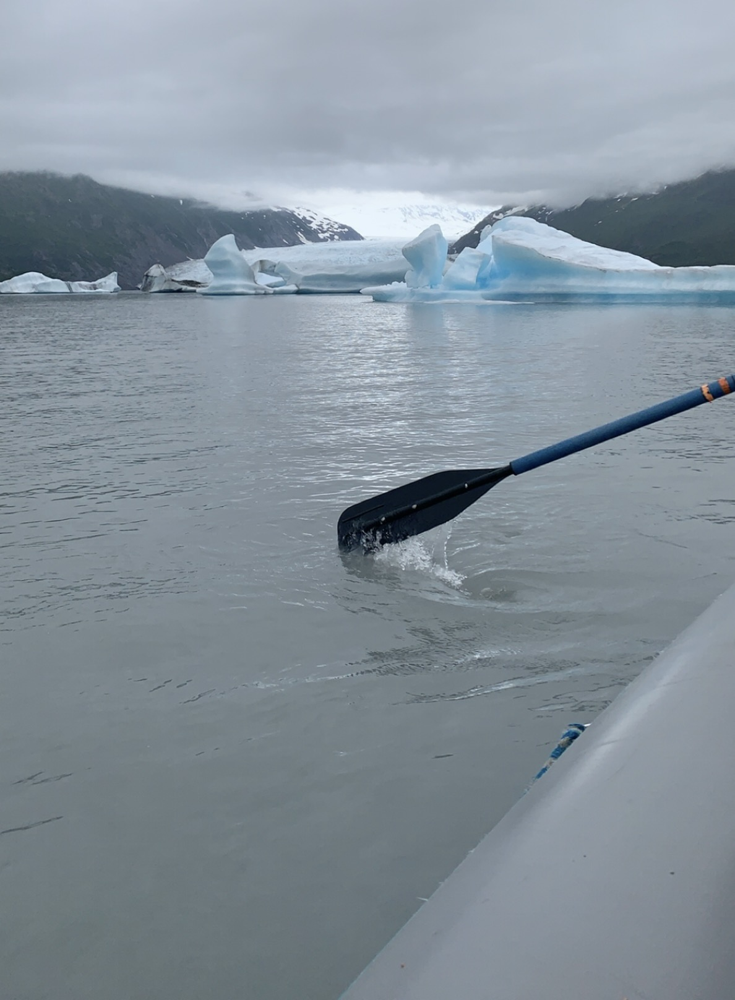
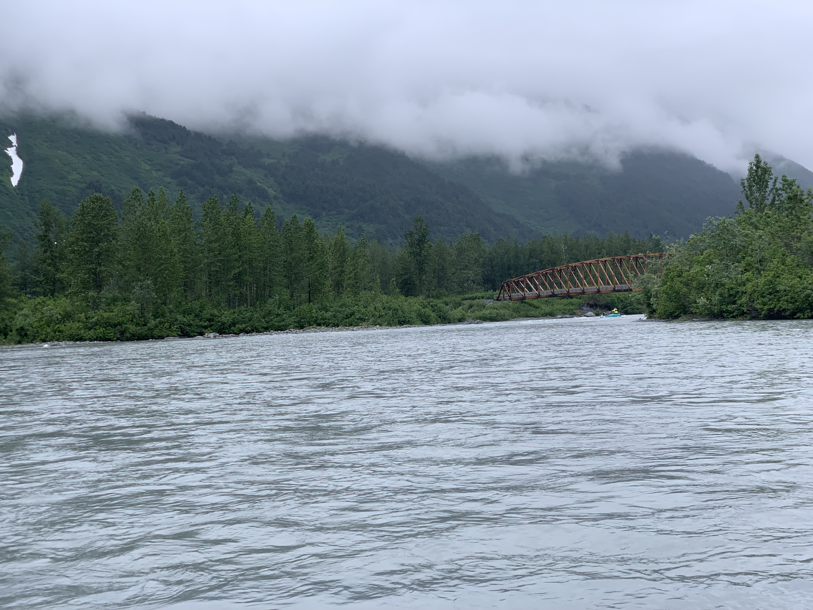
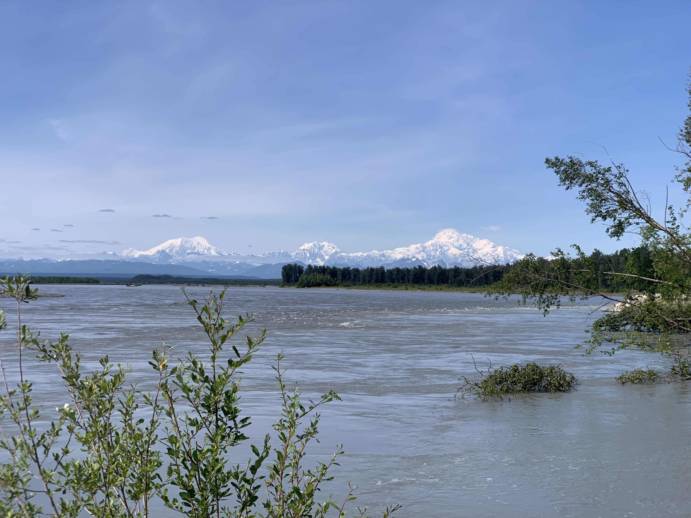
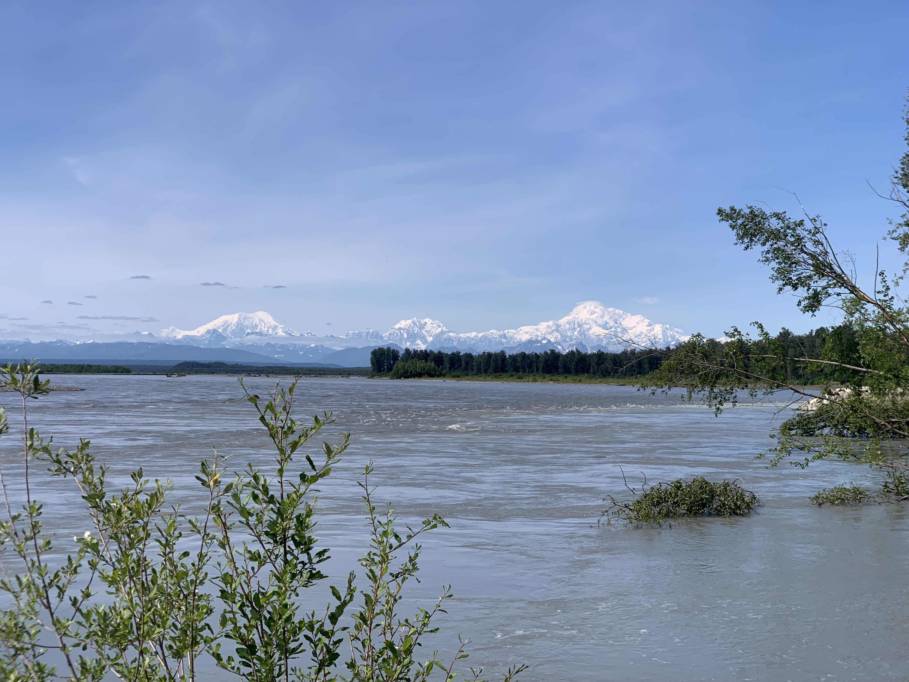

Alaska
Alaska is my most recently visited travel destination outside of the continental United States. On our first full day in Alaska,
we visited a nature conservatory which protected animals, the most exciting of which to see up close were the bears.
Afterwards, we went on a rafting tour around a glacier. Throughout the tour the weather was terrible and the water was
ice cold, but putting up with the cold temperatures was well worth the views.
 
The third full day of the Alaska vacation was by far the most exciting. We went to a helicopter tour company
that would take us to land on top of a mountain, where we would go dog sledding. The original helicopter lift off
point itself was visually stunning. After flying through the sky in the helicopter we finally landed on top of the
mountain, where we went dog sledding. After, on our way back we landed ontop of the glacier, and you can see in
the last photo just how blue the water is.


The finals few days of our trip to Alaska included driving to Denali National Park. On the drive there, we stopped
to take an ATV tour and had some quiet time to walk next to a river. At Denali National Park, we took a bus tour
to a one of the higher peaks and the view was insane. Unfortunately, we weren't able to see Mt. Denali at the park due
to fog. However, at a nearby city I was able to capture a long-distance photo of Mt. Denali.


 
